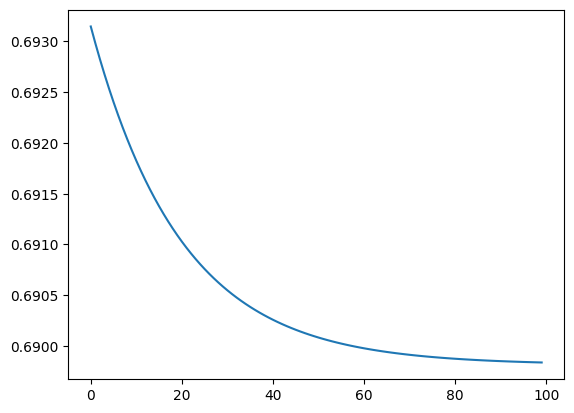

Laboratorio 1 - Parte 2. Regresión logística#
!wget -nc --no-cache -O init.py -q https://raw.githubusercontent.com/jdariasl/Intro_ML_2025/master/init.py
import init; init.init(force_download=False); init.get_weblink()
from local.lib.rlxmoocapi import submit, session
import inspect
session.LoginSequence(endpoint=init.endpoint, course_id=init.course_id, lab_id="L01.02", varname="student");
-----------
you are judaarlo@gmail.com .... wait for the cell below to complete signup
-----------
student = session.Session(init.endpoint).login(course_id=init.course_id, lab_id='L01.02', google_token=google_token)
using course session introml::udea.pre.20251
success!! you are logged in
#configuración del laboratorio
# Ejecuta esta celda!
from Labs.commons.utils.lab1 import *
_, x, y = part_2()
y = y.reshape(np.size(y), 1)
cargando librerias y variables al ambiente
Ejercicio 1: Contextualización del problema#
En esta sesión de laboratorio, vamos a resolver un problema de clasificación. Los variables que vamos a usar ya se encuentran cargadas:
# tienes ya cargadas las siguientes variables:
print("conjunto de datos, muestra \n",x[range(10), :] )
print("")
print(" muestra de etiquetas a predecir \n", y[range(10)])
conjunto de datos, muestra
[[ 3.92606402 -6.83699086]
[ 7.43382787 -3.7485991 ]
[ 6.20553473 4.77182668]
[ 6.77983287 -3.07765299]
[-5.92614125 -4.87588843]
[ 7.49283136 3.9516693 ]
[-1.65572633 6.86081477]
[-8.14881988 -1.85421149]
[ 8.12616581 -1.66701921]
[ 9.73411311 -1.63724335]]
muestra de etiquetas a predecir
[[1]
[1]
[1]
[1]
[1]
[1]
[1]
[1]
[1]
[1]]
#Ejercicio de Codigo
def clases_muestras_carac(X, Y):
"""Esta función debe retornar el numero clases, muestras
y caracteristicas del conjunto de datos X y Y
X: matriz numpy con el conjunto de datos para entrenamiento
Y: matriz numpy con el conjunto de etiquetas
retorna:
número de clases (int/float)
número de muestras (int/float)
número de características (int/float)
"""
##Pista: es de utilidad el metodo np.unique ?
N,nf =
clases =
return (clases,N,nf)
## TEACHER
def clases_muestras_carac(X, Y):
N,nf =
clases =
return (clases,N,nf)
## TEACHER
from local.lib.rlxmoocapi import submit, session
session.LoginSequence(endpoint=init.endpoint, course_id=init.course_id, lab_id="L01.02", varname="teacher");
-----------
you are judaarlo@gmail.com .... wait for the cell below to complete signup
-----------
teacher = session.Session(init.endpoint).login(course_id=init.course_id, lab_id='L01.02', google_token=google_token)
using course session introml::udea.pre.20251
success!! you are logged in
## TEACHER DEFINEGRADER
def grader_01(functions, variables, caller_userid):
import numpy as np
def t_clases_muestras_carac(X, Y):
N,nf = X.shape
clases = len(np.unique(Y))
return (clases,N,nf)
# retrieve definitions
namespace = locals()
for f in functions.values():
exec(f, namespace)
s_clases_muestras_carac = namespace['clases_muestras_carac']
msg = "testing your code with 100 random data points<br/>"
for _ in range(10):
input_dim = np.random.randint(5)+5
input_n = np.random.randint(500) + 20
input_data = np.random.randn(input_n,input_dim)
n_classes = np.random.randint(2,10)
target_output = np.random.randint(0, n_classes, size=input_n)
t_model = t_clases_muestras_carac(input_data,target_output)
s_model = s_clases_muestras_carac(input_data,target_output)
msg = ""
# check first model weights
tw = [i for i in t_model]
sw = [i for i in s_model]
if tw!=sw:
msg += f"""
<b>Incorrect estimation of data dimensions</b>
for <tt>input_dim</tt>={input_dim}, <tt>n_samples</tt>={input_n} and <tt>n_classes</tt>={n_classes}<hr/>
Expecting result <pre>{(input_dim,input_n,n_classes)}</pre> <br/>
but got <pre>{s_model}</pre><br/>\n
"""
return 0, msg
return 5, msg+'<b>correct</b>'
source_functions_names_01 = ['clases_muestras_carac']
source_variables_names_01 = []
## TEACHER
def clases_muestras_carac(X, Y):
N,nf = X.shape
clases = len(np.unique(Y))
return (clases,N,nf)
# TEACHER
import inspect
teacher.run_grader_locally("grader_01", source_functions_names_01, source_variables_names_01, locals())
grade: 5
grader message
correct
## TEACHER SETGRADER
import inspect
teacher.set_grader(teacher.course_id, "L01.02", 'T1',
inspect.getsource(grader_01), 'grader_01',
source_functions_names_01, source_variables_names_01)
Registra tu solución en línea
student.submit_task(namespace=globals(), task_id='T1');
----- grader message -------correct
----------------------------
En los problemas de clasificación, que lo permiten, es de utilidad visualizar los datos. De esta manera se puede determinar que modelos o algortimos pueden tener mejor rendimiento. En la siguiente función, se debe:
Graficar los datos usando la función scatter de matplotlib. Recuerda consultar la documentación de la función
Asignar un color Map diferente al de defecto. Aca pueder los valores posibles.
#Ejercicio de Codigo
import matplotlib.pyplot as plt
def scatter_plot(X, Y):
"""Esta función es encargada de graficar los datos usando un scatter plot
(problema de clasificacion).
X: numpy array con el conjunto de datos para entrenamiento.
Ésta deberá ser usada para los ejes del gráfico. Puede asumir
que solo va tener dos columnas
Y: matriz numpy con el conjunto de etiquetas. Debera se usada
para mostrar en diferentes colores, las etiquetas de cada una
de las muestras
retorna:
No retorna nada, sólo se debe generar el grafico
"""
## puedes acceder con plt a la funcion adecuacada
## Pista: recuerda como indexar matrices
## Consulta como pasar el Color Map
plt.
# para mostrar el grafico
plt.show()
return (None)
# usarla para ver el grafico
# se debe ver dos nubes de puntos diferenciadas
scatter_plot(x,y)
#Pregunta Abierta
#¿Es el problema linealmente separable? justifique su respuesta
respuesta = ""
Ejercicio 2: entrenamiento#
En este laboratorio se va a realizar un procedimiento análogo al laboratorio anterior, pero con el modelo de regresión logística que sirve para resolver problemas de clasificación (en principio biclase).
¿Cómo se relacionan los siguientes conceptos a la luz del modelo de regresión logística?
Función de activación
Extensión de matriz
Modelo de regresión logística
Potencia del polinomio
El cálculo del error en clasificación
El gradiente descendente
Vamos a completar la función del sigmoide:
#Ejercicio de Código
def sigmoidal(z):
"""Función de activación Sigmoidal
z: es la varible a la que se le va a aplicar la función sigmoide.
es un array numpy de una sola dimension
retorna: un vector con el valor de la función sigmoide aplicada a cada elemento del arreglo de entrada
"""
#Complete la siguiente línea con el código para calcular la salida de la función sigmoidal
s = np.
return s
# TEACHER
def sigmoidal(z):
"""Función de activación Sigmoidal
z: es la varible a la que se le va aplicar el sigmoide.
es un array numpy de uan sola dimension
retorna: el valor del sigmiode
"""
#Complete la siguiente línea con el código para calcular la salida de la función sigmoidal
s = 1/(1 + np.exp(-z))
return s
En la siguiente celda se sugiere la implementación de 3 métodos que nos ayudaran a implementar los otros conceptos.
Modelo de regresión logística(Esta función usa nuestra
sigmoidal)Extensión de matriz
Potencia del polinomio
Cálculo del error en clasificación
Debemos comprender que hacen estas funciones para determinar donde poder usarlas mas adelante. Luego de ellos, ejecuta la celda para cargarlas.
def logistic_regression(X, W):
"""calcula la regresión logística
X: los valores que corresponden a las características
W: son los pesos usadados para realizar la regresión
retorna: valor estimado por la regresion logística
"""
#Con np.dot se realiza el producto matricial. Aquí X (extendida) tiene dim [Nxd] y W es dim [dx1]
Yest = np.dot(X,W)
Y_lest = sigmoidal(Yest)
return Y_lest #Y estimado: Esta variable contiene la salida de sigm(f(X,W))
def extension_matriz(X):
"""función que realiza la extensión de la matriz X
X: matriz con en el conjunto de muestras. array: [muestras x características]
retorna: X_ext: matriz extendida con un vector de unos
"""
#Obtenemos las dimensiones antes de exteneder la matriz
muestras,caracterisitcas =X.shape
#Extendemos la matriz X
unos = np.array([np.ones(muestras)])
X_ext = np.concatenate((unos.T, X), axis=1)
X_ext = X_ext.reshape(muestras, caracterisitcas+1)
return (X_ext)
def potenciaPolinomio(X,grado):
"""Añade las variables asociadas a un polinomio de grado > 1
X: matriz con en el conjunto de muestras (sin extender). array: [muestras x características]
grado: es el grado del polinomio que se va a usar como modelo
retorna: la matriz de datos con las nuevas características creadas.
"""
X2 = X.copy()
if grado != 1:
for i in range(2,grado+1):
Xadd = X**i
X2 = np.concatenate((X2, Xadd), axis=1)
return X2
def cost_logistic(Y_lest, Y):
"""cálculo de la función de coste (entropía-cruzada)
Si es diferente el Y_estimado con el Y_real cuenta como un error
Y_lest: numpy array con los valores reales estimados
Y: numpy array con los valores reales de las etiquetas
retorna: costo -- numpy array
"""
f1 = Y*np.log(Y_lest + np.finfo(np.float32).eps)
f2 = (1-Y)*np.log(1-Y_lest + np.finfo(np.float32).eps)
error = -np.sum(f1+f2)/Y.shape[0]
return error
# ten en cuenta la salida de esta prueba para responder la pregunta abierta siguiente
vector = np.array([[1,4]])
print(vector)
potenciaPolinomio(vector, 3)
[[1 4]]
array([[ 1, 4, 1, 16, 1, 64]])
#Pregunta Abierta
#Analizando lo anterior y asumiendo que el vector es representado como [x1, x2] ¿Cual seria la representación de `potenciaPolinomio(vector, 3)?
respuesta = ""
recordando lo aprendido anteriormente, dividimos nuestro cojunto de datos y normalizamos. SOLO EJECUTAR UNA VEZ
#Dejamos algunas muestras para el proceso de entrenamiento y otras para evaluar qué tan bueno fue el aprendizaje del modelo
random.seed(1)
N = x.shape[0]
ind=np.random.permutation(N)
Xtrain = x[ind[0:int(math.ceil(0.7*N))],:]
Xtest = x[ind[int(math.ceil(0.7*N)):N],:]
Ytrain = y[ind[0:int(math.ceil(0.7*N))]]
Ytest = y[ind[int(math.ceil(0.7*N)):N]]
# normalizamos
from sklearn.preprocessing import StandardScaler
scaler = StandardScaler()
Xtrain = scaler.fit_transform(Xtrain)
Xtest = scaler.transform(Xtest)
Ahora vamos a completar el código de la regla de actualización de los parámetros del algoritmo de gradiente_descedente
recordar que aca queremos reducir el costo logistico, pero la actualización de los pesos sigue siendo equivalente a la regresión vista anteriormente, solo que agregando la función \(g\) que corresponde al sigmoide.
Debemos tener presente:
Usar las funciones ya implementadas y no usar ninguna otra libreria adicional a las librerias ya pre-cargadas como numpy.
Dentro de nuestra función vamos incluir una transformación polinómica, por lo tanto el proceso a implementar puede ser descrito en los siguientes pasos:
Aplicar la transformación polinómica
Extender la matriz
Inicializar \(w\)
Y por cada iteración realizar el cálculo para actualizar \(w\)
#ejercicio de codigo
def gradiente_descendente_logistic_poly(X,Y,grado,eta, iteraciones):
"""Gradiente descendente para regresión logística
X: Matriz de datos extendida
Y: Vector con los valores a predecir
grado: Grado para usar en la transformacion polinómica
eta: Taza de aprendizaje
iteraciones: número máximo de iteraciones
retorna: W el valor de de los parametros de regresión polinomica
"""
# aplicamos la transformación
X2 = potenciaPolinomio(X,grado)
# realizamos la extensión
X2_ext =
#Tomamos el número de variables del problema leugo de la transformacion
d = X2_ext.shape[1]
#Tomamos el número de muestras de la base de datos
N = X2_ext.shape[0]
#Inicializamos w
W = np.zeros(d)
W = W.reshape(np.size(W),1)
costos = np.zeros(iteraciones)
for iter in range(iteraciones):
#Aquí debe completar el código con la regla de actualización de los parámetros W para regresión
#logística. Tenga en cuenta los nombres de las variables ya creadas: W, X2, Y
costo = cost_logistic(,)
W =
#adicionamos el costo por cada iteracion
costos[iter] = costo
print("costo despues de finalizar las iteraciones", costo)
return W, costos
## TEACHER DEFINEGRADER
def grader_02(functions, variables, caller_userid):
import numpy as np
def t_sigmoidal(z):
"""Función de activación Sigmoidal
z: es la varible a la que se le va aplicar el sigmoide.
es un array numpy de uan sola dimension
retorna: el valor del sigmiode
"""
#Complete la siguiente línea con el código para calcular la salida de la función sigmoidal
s = 1/(1 + np.exp(-z))
return s
def t_gradiente_descendente_logistic_poly(X,Y,grado,eta, iteraciones):
"""Gradiente descendente para regresión logística
X: Matriz de datos extendida
Y: vector con los valores a predecir
W: Vector de parámetros del modelo
eta: Taza de aprendizaje
grado: grado para usar en la transformacion polinomica
iteraciones: numero de iteraciones maxima
retorna: W el valor de de los parametros de regresión polinomica
"""
# aplicamos la transformación
X2 = potenciaPolinomio(X,grado)
# realizamos la extensión
X2_ext = extension_matriz(X2)
#Tomamos el número de variables del problema leugo de la transformacion
d = X2_ext.shape[1]
#Tomamos el número de muestras de la base de datos
N = X2_ext.shape[0]
#Inicializamos w
W = np.zeros(d)
W = W.reshape(np.size(W),1)
costos = np.zeros(iteraciones)
for iter in range(iteraciones):
#Aquí debe completar el código con la regla de actualización de los parámetros W para regresión
#logística. Tenga en cuenta los nombres de las variables ya creadas: W, X2, Y
Y_lest = t_sigmoidal(X2_ext@W)
costo = cost_logistic(Y_lest,Y)
f_xw_min_yi = (Y_lest.reshape(-1,1) - Y.reshape(-1,1)).T@X2_ext
# acutaliza
W = W -(eta/N)*f_xw_min_yi.T
#adicionamos el costo por cada iteracion
costos[iter] = costo
#print("costo despues de finalizar las iteraciones", costo)
return W, costos
# retrieve definitions
namespace = locals()
for f in functions.values():
exec(f, namespace)
s_gradiente_descendente_logistic_poly = namespace['gradiente_descendente_logistic_poly']
sigmoidal = namespace['sigmoidal']
extension_matriz = namespace['extension_matriz']
logistic_regression = namespace['logistic_regression']
cost_logistic = namespace['cost_logistic']
potenciaPolinomio = namespace['potenciaPolinomio']
msg = "testing your code with 100 random data points<br/>"
for _ in range(10):
input_dim = np.random.randint(5)+5
input_n = np.random.randint(500) + 20
input_data = np.random.randn(input_n,input_dim)
grado = np.random.randint(3) + 1
n_classes = 2
reg_output = np.random.randn(input_n)*2
output_target = np.random.randint(0, n_classes, size=input_n)
eta = 0.0001
msg = ""
#Test for W = zeros
t_sig = t_sigmoidal(reg_output)
s_sig = sigmoidal(reg_output)
t_W, t_costos = t_gradiente_descendente_logistic_poly(input_data, output_target, grado, eta, input_dim, )
s_W, s_costos = s_gradiente_descendente_logistic_poly(input_data, output_target, grado, eta, input_dim, )
msg = ""
#check sigmoide
if len(s_sig) != input_n:
msg += f"""
<b>Incorrect implementation of sigmoidal function</b>
For <tt>vector of dimension</tt>={input_n} <hr/>
Expecting output dimension <pre>{input_n}</pre> <br/>
but got <pre>{len(s_sig)}</pre><br/>\n
"""
return 0, msg
if not np.allclose(t_sig,s_sig):
msg += f"""
<b>Incorrect implementation of sigmoidal function</b>
For <tt>vector </tt>={reg_output} <hr/>
Expecting values <pre>{t_sig}</pre> <br/>
but got <pre>{s_sig}</pre><br/>\n
"""
return 0, msg
# check first vector dimension
if len(t_W)!=len(s_W):
msg += f"""
<b>Incorrect model dimensions</b>
For <tt>initial dim </tt>={input_dim}<hr/>
Expecting weights vector dim <pre>{len(t_W)}</pre> <br/>
but got <pre>{len(s_W)}</pre><br/>\n
"""
return 0, msg
# check model weights
if (t_W!=s_W).any():
msg += f"""
<b>Incorrect estimation of model parameters</b>
for <tt>initial dim </tt>={input_dim} and <tt>n_samples</tt>={input_n}<hr/>
Expecting result <pre>{t_W}</pre> <br/>
but got <pre>{s_W}</pre><br/>\n
"""
return 0, msg
if not np.allclose(t_costos,s_costos):
msg += f"""
<b>Incorrect estimation of model parameters</b>
For <tt>Max iterations </tt>={input_dim} <hr/>
Expecting loss function values <pre>{t_costos}</pre> <br/>
but got <pre>{s_costos}</pre><br/>\n
"""
return 0, msg
return 5, msg+'<b>correct</b>'
source_functions_names_02 = ['sigmoidal','gradiente_descendente_logistic_poly','logistic_regression','extension_matriz','potenciaPolinomio','cost_logistic']
source_variables_names_02 = []
## TEACHER
def gradiente_descendente_logistic_poly(X,Y,grado,eta, iteraciones):
"""Gradiente descendente para regresión logística
X: Matriz de datos extendida
Y: vector con los valores a predecir
W: Vector de parámetros del modelo
eta: Taza de aprendizaje
grado: grado para usar en la transformacion polinomica
iteraciones: numero de iteraciones maxima
retorna: W el valor de de los parametros de regresión polinomica
"""
# aplicamos la transformación
X2 = potenciaPolinomio(X,grado)
# realizamos la extensión
X2_ext = extension_matriz(X2)
#Tomamos el número de variables del problema leugo de la transformacion
d = X2_ext.shape[1]
#Tomamos el número de muestras de la base de datos
N = X2_ext.shape[0]
#Inicializamos w
W = np.zeros(d)
W = W.reshape(np.size(W),1)
costos = np.zeros(iteraciones)
for iter in range(iteraciones):
#Aquí debe completar el código con la regla de actualización de los parámetros W para regresión
#logística. Tenga en cuenta los nombres de las variables ya creadas: W, X2, Y
Y_lest = sigmoidal(X2_ext@W)
costo = cost_logistic(Y_lest,Y)
f_xw_min_yi = (Y_lest.reshape(-1,1) - Y.reshape(-1,1)).T@X2_ext
# acutaliza
W = W -(eta/N)*f_xw_min_yi.T
#adicionamos el costo por cada iteracion
costos[iter] = costo
print("costo despues de finalizar las iteraciones", costo)
return W, costos
# TEACHER
import inspect
teacher.run_grader_locally("grader_02", source_functions_names_02, source_variables_names_02, locals())
costo despues de finalizar las iteraciones 293.8942446249436
costo despues de finalizar las iteraciones 137.93608627849156
costo despues de finalizar las iteraciones 102.58576388327391
costo despues de finalizar las iteraciones 201.7056912270925
costo despues de finalizar las iteraciones 351.42533038949
costo despues de finalizar las iteraciones 150.4103485896474
costo despues de finalizar las iteraciones 173.28432882960146
costo despues de finalizar las iteraciones 180.91062061122065
costo despues de finalizar las iteraciones 231.5109711928489
costo despues de finalizar las iteraciones 342.4137557540451
grade: 5
grader message
correct
## TEACHER SETGRADER
import inspect
teacher.set_grader(teacher.course_id, "L01.02", 'T2',
inspect.getsource(grader_02), 'grader_02',
source_functions_names_02, source_variables_names_02)
Registra tu solución en línea
student.submit_task(namespace=globals(), task_id='T2');
----- grader message -------correct
----------------------------
Veamos de manera preliminar, si nuestro algortimo de gradiente esta optimizando el costo. Vamos entrenar con 100 iteraciones y vamos a graficar el costo logistico y verificar como cambia de acuerdo a las iteraciones. ¿Que pasa si cambias el grado?
iteraciones = 100
w, costos_logistico = gradiente_descendente_logistic_poly(Xtrain,Ytrain,grado = 1, eta = 0.1, iteraciones = iteraciones)
print("este las dimensiones de w son:", w.shape)
plt.plot(range(iteraciones), costos_logistico)
plt.show()
costo despues de finalizar las iteraciones 0.6898376800243999
este las dimensiones de w son: (3, 1)

#Pregunta Abierta
#¿Con base a los resultados anteriores, qué efecto tiene el grado en el comportamiento del costo?
respuesta = ""
Como habiamos visto antes, el costo es nuestra medida de optimización, pero al final debemos evaluar qué tan bien esta realizando la tarea de clasificación. En este caso, a diferencia de la regresión, la métrica de evaluación y la función de coste son diferentes. Entiende la siguiente función, preste especial atención al bloque if-else.
def evaluar_modelo (W, X_to_test, Y_True, grado):
""" función que evalua un modelo de clasificación
W: es un matriz con los parametros del modelo entrenados
X_to_test: conjunto de datos para usar en la evaluación del modelo
Y_True: valores reales para usar en la evaluación del modelo
grado: valor del polinomio a usar
retorna: el error de clasificación.
"""
X2 = potenciaPolinomio(X_to_test,grado)
# realizamos la extensión
X2_ext = extension_matriz(X2)
Y_EST = logistic_regression(X2_ext,W)
#Se asignan los valores a 1 o 0 según el modelo de regresión logística definido
for pos, tag in enumerate (Y_EST):
if tag >= 0.5:
Y_EST[pos] = 1
else:
Y_EST[pos] = 0
error = 0
for ye, y in zip(Y_EST, Y_True):
if ye != y:
error += 1
error_clasificacion = error/np.size(Y_True)
return(error_clasificacion)
Evaluamos el w obtenido antes. Debemos tener presente que para la evaluación usamos el conjunto adecuado para esa tarea. Recuerda usar el grado de acuerdo a la ultima ejecución.
# recuerda que si entrenaste con grado = 2 debes asignar el mismo valor.
error_test = evaluar_modelo(w, Xtest, Ytest, grado = 1)
print("error en el conjunto de pruebas", error_test)
error en el conjunto de pruebas 0.41333333333333333
Ejercicio 3: Validación#
En nuestro primer experimento vamos a evaluar el rendimiento del modelo usando varias tasas de aprendizaje y grados de polinimios. Vamos a dejar por ahora un numero de iteraciones fijas = 30. Para ello completa la siguiente función. Recuerda usar las funciones anteriores.
## ejercicio de codigo
def experimentar (Xtrain, Xtest, Ytrain, Ytest, tasas, grados):
""" funcion para realizar experimentos.
Xtrain: matriz con el conjunto de muestras de entrenamiento
Xtest: matriz con el conjunto de muestras de prueba
Ytrain: salida objetivo para el conjunto de muestras de entrenamiento
Ytest: salida objetivo para el conjunto de muestras de prueba
tasas: Es una lista con los valores númericos de tasas de aprendizaje
para realizar los experimentos
grados: Es una lista con los valores númericos de grados
para realizar los experimentos
retorna: un dataframe con los resultados de los experimentos
"""
numero_iter = 30
resultados = pd.DataFrame()
idx = 0 # indice
for eta in tasas:
for grado in grados:
# ignorar el costo
W, _ =
error_entrenamiento =
error_prueba =
resultados.loc[idx,'grado'] = grado
resultados.loc[idx,'tasa de aprendizaje'] = eta
resultados.loc[idx,'error_entreamiento'] = error_entrenamiento
resultados.loc[idx,'error_prueba'] = error_prueba
idx = idx+1
return (resultados)
## TEACHER DEFINEGRADER
def grader_03(functions, variables, caller_userid):
import numpy as np
import pandas as pd
from sklearn.preprocessing import StandardScaler
def t_experimentar (Xtrain, Xtest, Ytrain, Ytest, tasas, grados):
""" funcion para realizar experimentos.
Xtrain: matriz con el conjunto de muestras de entrenamiento
Xtest: matriz con el conjunto de muestras de prueba
Ytrain: salida objetivo para el conjunto de muestras de entrenamiento
Ytest: salida objetivo para el conjunto de muestras de prueba
tasas: Es una lista con los valores númericos de tasas de aprendizaje
para realizar los experimentos
grados: Es una lista con los valores númericos de grados
para realizar los experimentos
retorna: un dataframe con los resultados de los experimentos
"""
numero_iter = 30
resultados = pd.DataFrame()
idx = 0 # indice
for eta in tasas:
for grado in grados:
# ignorar el costo
W, _ = gradiente_descendente_logistic_poly(Xtrain,Ytrain,grado,eta, numero_iter)
error_entrenamiento = evaluar_modelo (W, Xtrain, Ytrain, grado)
error_prueba = evaluar_modelo (W, Xtest, Ytest, grado)
resultados.loc[idx,'grado'] = grado
resultados.loc[idx,'tasa de aprendizaje'] = eta
resultados.loc[idx,'error_entreamiento'] = error_entrenamiento
resultados.loc[idx,'error_prueba'] = error_prueba
idx = idx+1
return (resultados)
# retrieve definitions
namespace = locals()
for f in functions.values():
exec(f, namespace)
s_experimentar = namespace['experimentar']
gradiente_descendente_logistic_poly = namespace['gradiente_descendente_logistic_poly']
evaluar_modelo = namespace['evaluar_modelo']
extension_matriz = namespace['extension_matriz']
logistic_regression = namespace['logistic_regression']
cost_logistic = namespace['cost_logistic']
potenciaPolinomio = namespace['potenciaPolinomio']
sigmoidal = namespace['sigmoidal']
msg = "testing your code with 100 random data points<br/>"
for _ in range(10):
input_dim = np.random.randint(5)+5
grados = np.arange(1,4)
input_n = np.random.randint(500) + 20
grado = grados[np.random.randint(2)+1]
x_train = potenciaPolinomio(np.random.randn(input_n,input_dim)+np.random.randn(input_n,input_dim),grado)
x_test = potenciaPolinomio(np.random.randn(int(input_n*0.5),input_dim),grado)
n_classes = 2
output_target = np.random.randint(0, n_classes, size=input_n)
output_target_test = np.random.randint(0, n_classes, size=int(input_n*0.5))
x_train[output_target==1] = x_train[output_target==1] + 10
x_test[output_target_test==1] = x_test[output_target_test==1] + 10
tasas = [10.0, 1.0, 0.1, 0.001]
# normalizamos
scaler = StandardScaler()
x_train = scaler.fit_transform(x_train)
x_test = scaler.transform(x_test)
t_resultados = t_experimentar(x_train, x_test, output_target, output_target_test, tasas, grados)
s_resultados = s_experimentar(x_train, x_test, output_target, output_target_test, tasas, grados)
msg = ""
t_minerror_tr = np.min(np.nan_to_num(t_resultados['error_entreamiento'].values, nan=100))
s_minerror_tr = np.min(np.nan_to_num(s_resultados['error_entreamiento'].values, nan=100))
t_minerror_te = np.min(np.nan_to_num(t_resultados['error_prueba'].values, nan=100))
s_minerror_te = np.min(np.nan_to_num(s_resultados['error_prueba'].values, nan=100))
# check min error
if (t_minerror_tr!=s_minerror_tr):
msg += f"""
<b>Incorrect model training</b>
Expecting min error in training <pre>{t_minerror_tr}</pre> <br/>
but got <pre>{s_minerror_tr}</pre><br/>\n
"""
return 0, msg
# check error estimation
if (t_minerror_te!=s_minerror_te):
msg += f"""
<b>Incorrect model performance</b>
Expecting test min error <pre>{t_minerror_te}</pre> <br/>
but got <pre>{s_minerror_te}</pre><br/>\n
"""
return 0, msg
# check model weights
return 5, msg+'<b>correct</b>'
source_functions_names_03 = ['experimentar','evaluar_modelo','sigmoidal','gradiente_descendente_logistic_poly','logistic_regression','extension_matriz','potenciaPolinomio','cost_logistic']
source_variables_names_03 = []
## TEACHER
def experimentar (Xtrain, Xtest, Ytrain, Ytest, tasas, grados):
""" funcion para realizar experimentos.
Xtrain: matriz con el conjunto de muestras de entrenamiento
Xtest: matriz con el conjunto de muestras de prueba
Ytrain: salida objetivo para el conjunto de muestras de entrenamiento
Ytest: salida objetivo para el conjunto de muestras de prueba
tasas: Es una lista con los valores númericos de tasas de aprendizaje
para realizar los experimentos
grados: Es una lista con los valores númericos de grados
para realizar los experimentos
retorna: un dataframe con los resultados de los experimentos
"""
numero_iter = 30
resultados = pd.DataFrame()
idx = 0 # indice
for eta in tasas:
for grado in grados:
# ignorar el costo
W, _ = gradiente_descendente_logistic_poly(Xtrain,Ytrain,grado,eta, numero_iter)
error_entrenamiento = evaluar_modelo (W, Xtrain, Ytrain, grado)
error_prueba = evaluar_modelo (W, Xtest, Ytest, grado)
resultados.loc[idx,'grado'] = grado
resultados.loc[idx,'tasa de aprendizaje'] = eta
resultados.loc[idx,'error_entreamiento'] = error_entrenamiento
resultados.loc[idx,'error_prueba'] = error_prueba
idx = idx+1
return (resultados)
# TEACHER
import inspect
teacher.run_grader_locally("grader_03", source_functions_names_03, source_variables_names_03, locals())
costo despues de finalizar las iteraciones 3827.6496745247
costo despues de finalizar las iteraciones 3819.626772164665
costo despues de finalizar las iteraciones 3828.161052389383
costo despues de finalizar las iteraciones 1483.6205267980215
costo despues de finalizar las iteraciones 1493.067774532808
<string>:10: RuntimeWarning: overflow encountered in exp
costo despues de finalizar las iteraciones 3017.0390136873266
costo despues de finalizar las iteraciones 812.0446318009612
costo despues de finalizar las iteraciones 813.6907464900812
costo despues de finalizar las iteraciones 1100.5317246247512
costo despues de finalizar las iteraciones 334.51751783263546
costo despues de finalizar las iteraciones 334.6795555366426
costo despues de finalizar las iteraciones 355.70875025055784
costo despues de finalizar las iteraciones 3827.6496745247
costo despues de finalizar las iteraciones 3819.626772164665
costo despues de finalizar las iteraciones 3828.161052389383
<string>:10: RuntimeWarning: overflow encountered in exp
costo despues de finalizar las iteraciones 1483.6205267980215
costo despues de finalizar las iteraciones 1493.067774532808
costo despues de finalizar las iteraciones 3017.0390136873266
costo despues de finalizar las iteraciones 812.0446318009612
costo despues de finalizar las iteraciones 813.6907464900812
costo despues de finalizar las iteraciones 1100.5317246247512
costo despues de finalizar las iteraciones 334.51751783263546
costo despues de finalizar las iteraciones 334.6795555366426
costo despues de finalizar las iteraciones 355.70875025055784
costo despues de finalizar las iteraciones 3945.595365045518
costo despues de finalizar las iteraciones 3945.594593753319
<string>:10: RuntimeWarning: overflow encountered in exp
costo despues de finalizar las iteraciones 3943.072909684741
costo despues de finalizar las iteraciones 2128.5603930538855
costo despues de finalizar las iteraciones 2161.875162065081
costo despues de finalizar las iteraciones 3922.9820429152965
costo despues de finalizar las iteraciones 977.9729325078647
costo despues de finalizar las iteraciones 980.6163597892415
costo despues de finalizar las iteraciones 1384.964261043842
costo despues de finalizar las iteraciones 346.44299215946154
costo despues de finalizar las iteraciones 346.6816410004038
costo despues de finalizar las iteraciones 375.3132645970212
costo despues de finalizar las iteraciones 3945.595365045518
costo despues de finalizar las iteraciones 3945.594593753319
costo despues de finalizar las iteraciones 3943.072909684741
costo despues de finalizar las iteraciones 2128.5603930538855
costo despues de finalizar las iteraciones 2161.875162065081
<string>:10: RuntimeWarning: overflow encountered in exp
costo despues de finalizar las iteraciones 3922.9820429152965
costo despues de finalizar las iteraciones 977.9729325078647
costo despues de finalizar las iteraciones 980.6163597892415
costo despues de finalizar las iteraciones 1384.964261043842
costo despues de finalizar las iteraciones 346.44299215946154
costo despues de finalizar las iteraciones 346.6816410004038
costo despues de finalizar las iteraciones 375.3132645970212
costo despues de finalizar las iteraciones 1536.4163814409633
costo despues de finalizar las iteraciones 1533.7820540235807
costo despues de finalizar las iteraciones 1536.4163814529052
costo despues de finalizar las iteraciones 793.4824604332889
costo despues de finalizar las iteraciones 824.1473391704675
costo despues de finalizar las iteraciones 1534.3138050334223
costo despues de finalizar las iteraciones 375.75375971437995
costo despues de finalizar las iteraciones 377.5761691301473
costo despues de finalizar las iteraciones 544.2855028112876
costo despues de finalizar las iteraciones 134.95037263369335
costo despues de finalizar las iteraciones 135.09197457841083
costo despues de finalizar las iteraciones 147.09457397325434
costo despues de finalizar las iteraciones 1536.4163814409633
costo despues de finalizar las iteraciones 1533.7820540235807
costo despues de finalizar las iteraciones 1536.4163814529052
costo despues de finalizar las iteraciones 793.4824604332889
costo despues de finalizar las iteraciones 824.1473391704675
costo despues de finalizar las iteraciones 1534.3138050334223
costo despues de finalizar las iteraciones 375.75375971437995
<string>:10: RuntimeWarning: overflow encountered in exp
<string>:10: RuntimeWarning: overflow encountered in exp
costo despues de finalizar las iteraciones 377.5761691301473
costo despues de finalizar las iteraciones 544.2855028112876
costo despues de finalizar las iteraciones 134.95037263369335
costo despues de finalizar las iteraciones 135.09197457841083
costo despues de finalizar las iteraciones 147.09457397325434
costo despues de finalizar las iteraciones 2050.511474291843
costo despues de finalizar las iteraciones 2045.6536530640121
costo despues de finalizar las iteraciones 2050.512034184262
costo despues de finalizar las iteraciones 789.4752206807271
costo despues de finalizar las iteraciones 793.9490582353902
costo despues de finalizar las iteraciones 1799.844084221062
costo despues de finalizar las iteraciones 430.96688771683694
costo despues de finalizar las iteraciones 431.44717814496363
costo despues de finalizar las iteraciones 596.4880601538932
costo despues de finalizar las iteraciones 179.38961090213178
costo despues de finalizar las iteraciones 179.4173839089812
costo despues de finalizar las iteraciones 186.91423082846555
costo despues de finalizar las iteraciones 2050.511474291843
costo despues de finalizar las iteraciones 2045.6536530640121
<string>:10: RuntimeWarning: overflow encountered in exp
<string>:10: RuntimeWarning: overflow encountered in exp
costo despues de finalizar las iteraciones 2050.512034184262
costo despues de finalizar las iteraciones 789.4752206807271
costo despues de finalizar las iteraciones 793.9490582353902
costo despues de finalizar las iteraciones 1799.844084221062
costo despues de finalizar las iteraciones 430.96688771683694
costo despues de finalizar las iteraciones 431.44717814496363
costo despues de finalizar las iteraciones 596.4880601538932
costo despues de finalizar las iteraciones 179.38961090213178
costo despues de finalizar las iteraciones 179.4173839089812
costo despues de finalizar las iteraciones 186.91423082846555
costo despues de finalizar las iteraciones 3389.6653971990877
costo despues de finalizar las iteraciones 3389.665408937011
costo despues de finalizar las iteraciones 3384.865203258329
costo despues de finalizar las iteraciones 1312.1614484756897
costo despues de finalizar las iteraciones 1309.0029739169634
costo despues de finalizar las iteraciones 2443.4794425450505
costo despues de finalizar las iteraciones 723.7167902660939
costo despues de finalizar las iteraciones 722.9050091365426
costo despues de finalizar las iteraciones 961.7206570831413
costo despues de finalizar las iteraciones 296.30375895962646
costo despues de finalizar las iteraciones 296.33467185336025
costo despues de finalizar las iteraciones 304.4228816560217
costo despues de finalizar las iteraciones 3389.6653971990877
costo despues de finalizar las iteraciones 3389.665408937011
costo despues de finalizar las iteraciones 3384.865203258329
costo despues de finalizar las iteraciones 1312.1614484756897
costo despues de finalizar las iteraciones 1309.0029739169634
costo despues de finalizar las iteraciones 2443.4794425450505
costo despues de finalizar las iteraciones 723.7167902660939
costo despues de finalizar las iteraciones 722.9050091365426
costo despues de finalizar las iteraciones 961.7206570831413
costo despues de finalizar las iteraciones 296.30375895962646
costo despues de finalizar las iteraciones 296.33467185336025
costo despues de finalizar las iteraciones 304.4228816560217
costo despues de finalizar las iteraciones 4084.7311672340343
costo despues de finalizar las iteraciones 4084.7311672340365
costo despues de finalizar las iteraciones 4080.079428270078
costo despues de finalizar las iteraciones 1833.0446204387465
costo despues de finalizar las iteraciones 1835.4272135000672
costo despues de finalizar las iteraciones 3806.026886517831
costo despues de finalizar las iteraciones 951.1997672093299
costo despues de finalizar las iteraciones 951.0728879864745
costo despues de finalizar las iteraciones 1277.9993713073234
costo despues de finalizar las iteraciones 357.80364232722945
costo despues de finalizar las iteraciones 357.81941878040243
costo despues de finalizar las iteraciones 373.4615926215321
costo despues de finalizar las iteraciones 4084.7311672340343
costo despues de finalizar las iteraciones 4084.7311672340365
costo despues de finalizar las iteraciones 4080.079428270078
costo despues de finalizar las iteraciones 1833.0446204387465
costo despues de finalizar las iteraciones 1835.4272135000672
costo despues de finalizar las iteraciones 3806.026886517831
costo despues de finalizar las iteraciones 951.1997672093299
costo despues de finalizar las iteraciones 951.0728879864745
costo despues de finalizar las iteraciones 1277.9993713073234
costo despues de finalizar las iteraciones 357.80364232722945
costo despues de finalizar las iteraciones 357.81941878040243
costo despues de finalizar las iteraciones 373.4615926215321
costo despues de finalizar las iteraciones 2483.7522802852595
costo despues de finalizar las iteraciones 2483.7522802852595
costo despues de finalizar las iteraciones 2486.961130980962
costo despues de finalizar las iteraciones 1367.3047301980448
costo despues de finalizar las iteraciones 1385.9977006388576
<string>:10: RuntimeWarning: overflow encountered in exp
costo despues de finalizar las iteraciones 2477.0210176115397
costo despues de finalizar las iteraciones 622.1944970908386
costo despues de finalizar las iteraciones 621.8462062269397
costo despues de finalizar las iteraciones 1018.9680778423439
costo despues de finalizar las iteraciones 219.13946713382035
costo despues de finalizar las iteraciones 219.248000317419
costo despues de finalizar las iteraciones 241.34889182447458
costo despues de finalizar las iteraciones 2483.7522802852595
costo despues de finalizar las iteraciones 2483.7522802852595
costo despues de finalizar las iteraciones 2486.961130980962
costo despues de finalizar las iteraciones 1367.3047301980448
costo despues de finalizar las iteraciones 1385.9977006388576
costo despues de finalizar las iteraciones 2477.0210176115397
<string>:10: RuntimeWarning: overflow encountered in exp
<string>:10: RuntimeWarning: overflow encountered in exp
costo despues de finalizar las iteraciones 622.1944970908386
costo despues de finalizar las iteraciones 621.8462062269397
costo despues de finalizar las iteraciones 1018.9680778423439
costo despues de finalizar las iteraciones 219.13946713382035
costo despues de finalizar las iteraciones 219.248000317419
costo despues de finalizar las iteraciones 241.34889182447458
costo despues de finalizar las iteraciones 1514.3587636167827
costo despues de finalizar las iteraciones 1514.3586721284726
costo despues de finalizar las iteraciones 1509.5878677691587
costo despues de finalizar las iteraciones 673.5515565309133
costo despues de finalizar las iteraciones 715.6623850987081
costo despues de finalizar las iteraciones 1419.6926310485162
costo despues de finalizar las iteraciones 350.8820512534095
costo despues de finalizar las iteraciones 357.34965998828983
costo despues de finalizar las iteraciones 500.2268797369095
costo despues de finalizar las iteraciones 132.49512517117319
costo despues de finalizar las iteraciones 132.80148351111103
costo despues de finalizar las iteraciones 145.98187376979632
costo despues de finalizar las iteraciones 1514.3587636167827
costo despues de finalizar las iteraciones 1514.3586721284726
costo despues de finalizar las iteraciones 1509.5878677691587
costo despues de finalizar las iteraciones 673.5515565309133
costo despues de finalizar las iteraciones 715.6623850987081
costo despues de finalizar las iteraciones 1419.6926310485162
costo despues de finalizar las iteraciones 350.8820512534095
costo despues de finalizar las iteraciones 357.34965998828983
costo despues de finalizar las iteraciones 500.2268797369095
costo despues de finalizar las iteraciones 132.49512517117319
costo despues de finalizar las iteraciones 132.80148351111103
costo despues de finalizar las iteraciones 145.98187376979632
costo despues de finalizar las iteraciones 3650.0017486125885
costo despues de finalizar las iteraciones 3643.231324197683
<string>:10: RuntimeWarning: overflow encountered in exp
<string>:10: RuntimeWarning: overflow encountered in exp
costo despues de finalizar las iteraciones 3650.1782543550694
costo despues de finalizar las iteraciones 1410.1401352791408
costo despues de finalizar las iteraciones 1417.755377211639
costo despues de finalizar las iteraciones 2848.6466019855116
costo despues de finalizar las iteraciones 771.3527278152185
costo despues de finalizar las iteraciones 772.9403293268049
costo despues de finalizar las iteraciones 1023.809000167186
costo despues de finalizar las iteraciones 318.50886802039565
costo despues de finalizar las iteraciones 318.5630048401092
costo despues de finalizar las iteraciones 336.52118318468723
costo despues de finalizar las iteraciones 3650.0017486125885
costo despues de finalizar las iteraciones 3643.231324197683
costo despues de finalizar las iteraciones 3650.1782543550694
costo despues de finalizar las iteraciones 1410.1401352791408
costo despues de finalizar las iteraciones 1417.755377211639
costo despues de finalizar las iteraciones 2848.6466019855116
costo despues de finalizar las iteraciones 771.3527278152185
<string>:10: RuntimeWarning: overflow encountered in exp
costo despues de finalizar las iteraciones 772.9403293268049
costo despues de finalizar las iteraciones 1023.809000167186
costo despues de finalizar las iteraciones 318.50886802039565
costo despues de finalizar las iteraciones 318.5630048401092
costo despues de finalizar las iteraciones 336.52118318468723
costo despues de finalizar las iteraciones 1705.2392162264675
costo despues de finalizar las iteraciones 1704.2120634697174
costo despues de finalizar las iteraciones 1705.236612032302
<string>:10: RuntimeWarning: overflow encountered in exp
<string>:10: RuntimeWarning: overflow encountered in exp
costo despues de finalizar las iteraciones 694.6253309727869
costo despues de finalizar las iteraciones 716.2782978735007
costo despues de finalizar las iteraciones 1594.4493585926002
costo despues de finalizar las iteraciones 376.6400005479335
costo despues de finalizar las iteraciones 378.9370909984757
costo despues de finalizar las iteraciones 557.4677146863828
costo despues de finalizar las iteraciones 148.98285897085418
costo despues de finalizar las iteraciones 149.12081015734648
costo despues de finalizar las iteraciones 162.5540336531636
costo despues de finalizar las iteraciones 1705.2392162264675
costo despues de finalizar las iteraciones 1704.2120634697174
costo despues de finalizar las iteraciones 1705.236612032302
costo despues de finalizar las iteraciones 694.6253309727869
costo despues de finalizar las iteraciones 716.2782978735007
costo despues de finalizar las iteraciones 1594.4493585926002
costo despues de finalizar las iteraciones 376.6400005479335
costo despues de finalizar las iteraciones 378.9370909984757
costo despues de finalizar las iteraciones 557.4677146863828
costo despues de finalizar las iteraciones 148.98285897085418
costo despues de finalizar las iteraciones 149.12081015734648
costo despues de finalizar las iteraciones 162.5540336531636
grade: 5
grader message
correct
## TEACHER SETGRADER
import inspect
teacher.set_grader(teacher.course_id, "L01.02", 'T3',
inspect.getsource(grader_03), 'grader_03',
source_functions_names_03, source_variables_names_03)
Registra tu solución en línea
student.submit_task(namespace=globals(), task_id='T3');
----- grader message -------correct
----------------------------
#Usa la función experimentar para ver los resultados que se obtienen en el problema de clasificación planteado en el laboratorio
tasas = [10.0, 1.0, 0.1, 0.001]
grados = [1,2,3]
resultados = experimentar (Xtrain, Xtest, Ytrain, Ytest, tasas, grados)
costo despues de finalizar las iteraciones 0.8601436780476497
costo despues de finalizar las iteraciones 0.022265709350282777
costo despues de finalizar las iteraciones 0.012513251806990883
costo despues de finalizar las iteraciones 0.6898144943719867
costo despues de finalizar las iteraciones 0.13540762817787222
costo despues de finalizar las iteraciones 0.1353452091484523
costo despues de finalizar las iteraciones 0.6905859663826568
costo despues de finalizar las iteraciones 0.4527897347276038
costo despues de finalizar las iteraciones 0.45277170702377834
costo despues de finalizar las iteraciones 0.6930990072150821
costo despues de finalizar las iteraciones 0.6859732957120156
costo despues de finalizar las iteraciones 0.6859325427418576
# para ver los resultados
resultados
| grado | tasa de aprendizaje | error_entreamiento | error_prueba | |
|---|---|---|---|---|
| 0 | 1.0 | 10.000 | 0.485714 | 0.453333 |
| 1 | 2.0 | 10.000 | 0.000000 | 0.000000 |
| 2 | 3.0 | 10.000 | 0.000000 | 0.000000 |
| 3 | 1.0 | 1.000 | 0.394286 | 0.413333 |
| 4 | 2.0 | 1.000 | 0.000000 | 0.000000 |
| 5 | 3.0 | 1.000 | 0.000000 | 0.000000 |
| 6 | 1.0 | 0.100 | 0.397143 | 0.413333 |
| 7 | 2.0 | 0.100 | 0.160000 | 0.106667 |
| 8 | 3.0 | 0.100 | 0.160000 | 0.100000 |
| 9 | 1.0 | 0.001 | 0.397143 | 0.420000 |
| 10 | 2.0 | 0.001 | 0.502857 | 0.466667 |
| 11 | 3.0 | 0.001 | 0.502857 | 0.466667 |
#Pregunta Abierta
#¿con base en los resultados anteriores, qué efecto tiene la tasa de aprendizaje en los errores de entrenamiento y de prueba?
respuesta = ""
Vamos entrenar nuevamente pero solo con los mejores parámetros. Si hay parametros empatados, el modelo que tenga menos parámetros deberia ser el mejor (recuerda que cuando aumentamos el grado del polinomio aumentamos el número de parametros del modelo).
# puede usar el siguiente código para ordenar los resultados y ver los 3 primeros
# resultados, use esta salida, para ver cuáles fueron los mejores parámetros
resultados.sort_values(by = ['error_prueba', 'grado'], ascending = True).head(3)
| grado | tasa de aprendizaje | error_entreamiento | error_prueba | |
|---|---|---|---|---|
| 1 | 2.0 | 10.0 | 0.0 | 0.0 |
| 4 | 2.0 | 1.0 | 0.0 | 0.0 |
| 2 | 3.0 | 10.0 | 0.0 | 0.0 |
#Pregunta Abierta
#¿por qué se uso el error de prueba para ordenar la tabla de resultados en lugar del error de entrenamiento?
respuesta = ""
Entrenemos con los mejores parámetros
# ignoramos el costo!
W,_= gradiente_descendente_logistic_poly(Xtrain,Ytrain,grado = ,eta = , iteraciones = 20)
print("estos son los pesos para el modelo entrenando \n", W)
costo despues de finalizar las iteraciones 0.027996688327477943
estos son los pesos para el modelo entrenando
[[-6.04033459]
[ 0.08423975]
[ 0.51737547]
[ 3.36223161]
[ 3.64826643]]
Debemos recordar que el modelo creado se puede resumir en una ecuación usando los pesos de \(w\). En el siguiente ejemplo la ecuación estaria dada como: 2.0 + 3.0x1 + 4.0x2, para el caso del polinomio grado 1.

Usando los valores del ultimo \(\bf{w}\) entrenado podriamos construir la función que define nuestra frontera.
#Pregunta Abierta
#Escriba el modelo completo con sus variables y coeficientes de f(**x**,**w**) con la mejor frontera de decisión que encontró. Recuerde tener presente el grado del polinomio.
respuesta = "0.0x1..."
## TEACHER
# --- CREATE or OVERWRITE STUDENTS NOTEBOOK ---
import init
from local.lib.rlxmoocapi import utils
student_notebook_fname = utils.convert_this_notebook_to_student()
Requirement already satisfied: ipynbname in /Users/julian/opt/anaconda3/envs/tensorflow/lib/python3.9/site-packages (2024.1.0.0)
Requirement already satisfied: ipykernel in /Users/julian/opt/anaconda3/envs/tensorflow/lib/python3.9/site-packages (from ipynbname) (6.19.3)
Requirement already satisfied: jupyter-client>=6.1.12 in /Users/julian/opt/anaconda3/envs/tensorflow/lib/python3.9/site-packages (from ipykernel->ipynbname) (7.4.8)
Requirement already satisfied: psutil in /Users/julian/opt/anaconda3/envs/tensorflow/lib/python3.9/site-packages (from ipykernel->ipynbname) (5.9.4)
Requirement already satisfied: debugpy>=1.0 in /Users/julian/opt/anaconda3/envs/tensorflow/lib/python3.9/site-packages (from ipykernel->ipynbname) (1.6.4)
Requirement already satisfied: traitlets>=5.4.0 in /Users/julian/opt/anaconda3/envs/tensorflow/lib/python3.9/site-packages (from ipykernel->ipynbname) (5.8.0)
Requirement already satisfied: ipython>=7.23.1 in /Users/julian/opt/anaconda3/envs/tensorflow/lib/python3.9/site-packages (from ipykernel->ipynbname) (8.7.0)
Requirement already satisfied: nest-asyncio in /Users/julian/opt/anaconda3/envs/tensorflow/lib/python3.9/site-packages (from ipykernel->ipynbname) (1.5.6)
Requirement already satisfied: tornado>=6.1 in /Users/julian/opt/anaconda3/envs/tensorflow/lib/python3.9/site-packages (from ipykernel->ipynbname) (6.2)
Requirement already satisfied: packaging in /Users/julian/opt/anaconda3/envs/tensorflow/lib/python3.9/site-packages (from ipykernel->ipynbname) (24.2)
Requirement already satisfied: comm>=0.1.1 in /Users/julian/opt/anaconda3/envs/tensorflow/lib/python3.9/site-packages (from ipykernel->ipynbname) (0.2.2)
Requirement already satisfied: pyzmq>=17 in /Users/julian/opt/anaconda3/envs/tensorflow/lib/python3.9/site-packages (from ipykernel->ipynbname) (24.0.1)
Requirement already satisfied: appnope in /Users/julian/opt/anaconda3/envs/tensorflow/lib/python3.9/site-packages (from ipykernel->ipynbname) (0.1.3)
Requirement already satisfied: matplotlib-inline>=0.1 in /Users/julian/opt/anaconda3/envs/tensorflow/lib/python3.9/site-packages (from ipykernel->ipynbname) (0.1.6)
Requirement already satisfied: backcall in /Users/julian/opt/anaconda3/envs/tensorflow/lib/python3.9/site-packages (from ipython>=7.23.1->ipykernel->ipynbname) (0.2.0)
Requirement already satisfied: stack-data in /Users/julian/opt/anaconda3/envs/tensorflow/lib/python3.9/site-packages (from ipython>=7.23.1->ipykernel->ipynbname) (0.6.2)
Requirement already satisfied: decorator in /Users/julian/opt/anaconda3/envs/tensorflow/lib/python3.9/site-packages (from ipython>=7.23.1->ipykernel->ipynbname) (5.1.1)
Requirement already satisfied: prompt-toolkit<3.1.0,>=3.0.11 in /Users/julian/opt/anaconda3/envs/tensorflow/lib/python3.9/site-packages (from ipython>=7.23.1->ipykernel->ipynbname) (3.0.36)
Requirement already satisfied: pexpect>4.3 in /Users/julian/opt/anaconda3/envs/tensorflow/lib/python3.9/site-packages (from ipython>=7.23.1->ipykernel->ipynbname) (4.8.0)
Requirement already satisfied: pygments>=2.4.0 in /Users/julian/opt/anaconda3/envs/tensorflow/lib/python3.9/site-packages (from ipython>=7.23.1->ipykernel->ipynbname) (2.19.1)
Requirement already satisfied: jedi>=0.16 in /Users/julian/opt/anaconda3/envs/tensorflow/lib/python3.9/site-packages (from ipython>=7.23.1->ipykernel->ipynbname) (0.18.2)
Requirement already satisfied: pickleshare in /Users/julian/opt/anaconda3/envs/tensorflow/lib/python3.9/site-packages (from ipython>=7.23.1->ipykernel->ipynbname) (0.7.5)
Requirement already satisfied: entrypoints in /Users/julian/opt/anaconda3/envs/tensorflow/lib/python3.9/site-packages (from jupyter-client>=6.1.12->ipykernel->ipynbname) (0.4)
Requirement already satisfied: python-dateutil>=2.8.2 in /Users/julian/opt/anaconda3/envs/tensorflow/lib/python3.9/site-packages (from jupyter-client>=6.1.12->ipykernel->ipynbname) (2.8.2)
Requirement already satisfied: jupyter-core>=4.9.2 in /Users/julian/opt/anaconda3/envs/tensorflow/lib/python3.9/site-packages (from jupyter-client>=6.1.12->ipykernel->ipynbname) (5.1.0)
Requirement already satisfied: parso<0.9.0,>=0.8.0 in /Users/julian/opt/anaconda3/envs/tensorflow/lib/python3.9/site-packages (from jedi>=0.16->ipython>=7.23.1->ipykernel->ipynbname) (0.8.3)
Requirement already satisfied: platformdirs>=2.5 in /Users/julian/opt/anaconda3/envs/tensorflow/lib/python3.9/site-packages (from jupyter-core>=4.9.2->jupyter-client>=6.1.12->ipykernel->ipynbname) (2.6.0)
Requirement already satisfied: ptyprocess>=0.5 in /Users/julian/opt/anaconda3/envs/tensorflow/lib/python3.9/site-packages (from pexpect>4.3->ipython>=7.23.1->ipykernel->ipynbname) (0.7.0)
Requirement already satisfied: wcwidth in /Users/julian/opt/anaconda3/envs/tensorflow/lib/python3.9/site-packages (from prompt-toolkit<3.1.0,>=3.0.11->ipython>=7.23.1->ipykernel->ipynbname) (0.2.5)
Requirement already satisfied: six>=1.5 in /Users/julian/opt/anaconda3/envs/tensorflow/lib/python3.9/site-packages (from python-dateutil>=2.8.2->jupyter-client>=6.1.12->ipykernel->ipynbname) (1.16.0)
Requirement already satisfied: asttokens>=2.1.0 in /Users/julian/opt/anaconda3/envs/tensorflow/lib/python3.9/site-packages (from stack-data->ipython>=7.23.1->ipykernel->ipynbname) (2.2.1)
Requirement already satisfied: pure-eval in /Users/julian/opt/anaconda3/envs/tensorflow/lib/python3.9/site-packages (from stack-data->ipython>=7.23.1->ipykernel->ipynbname) (0.2.2)
Requirement already satisfied: executing>=1.2.0 in /Users/julian/opt/anaconda3/envs/tensorflow/lib/python3.9/site-packages (from stack-data->ipython>=7.23.1->ipykernel->ipynbname) (1.2.0)
NOTEBOOK name is lab1_parte2--XX--TEACHER--XX.ipynb
student notebook writen to 'lab1_parte2.ipynb'